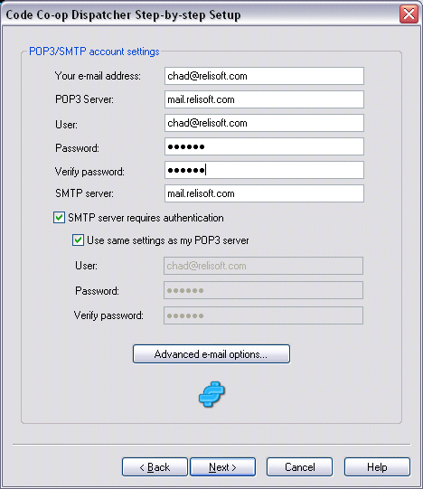

This dialog is very similar to the dialogs you fill out when configuring your e-mail program.

This dialog shows the settings when using a Yahoo account.
Click Next when you are done to test your settings.
< Back Next: Email Diagnostics >